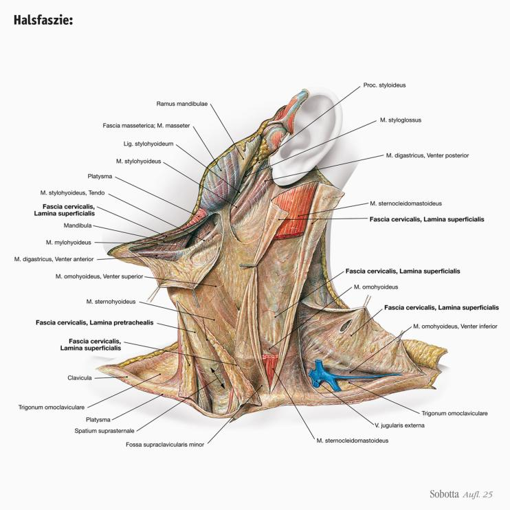
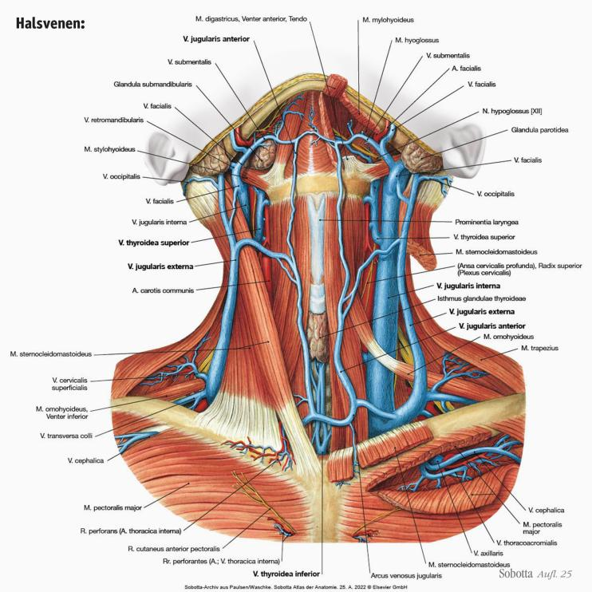
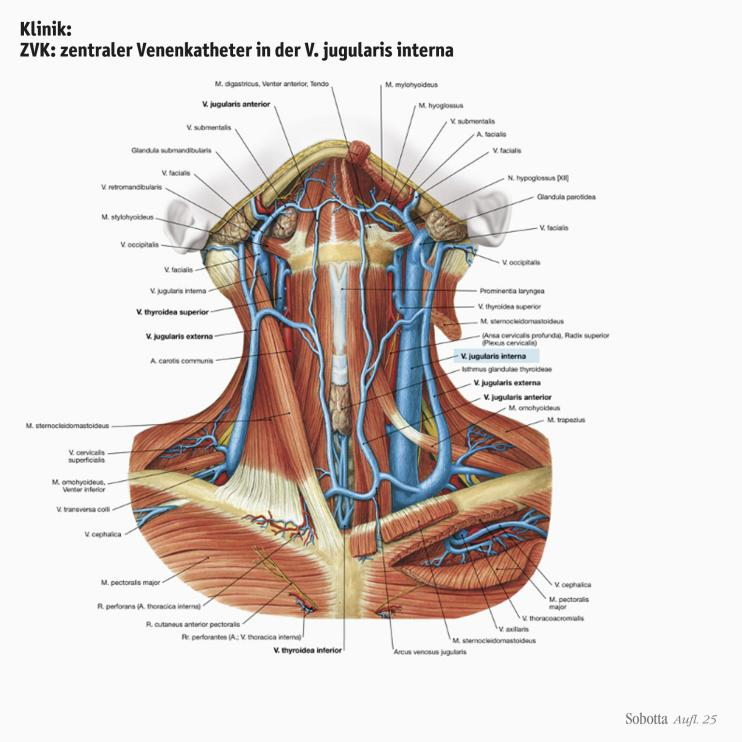
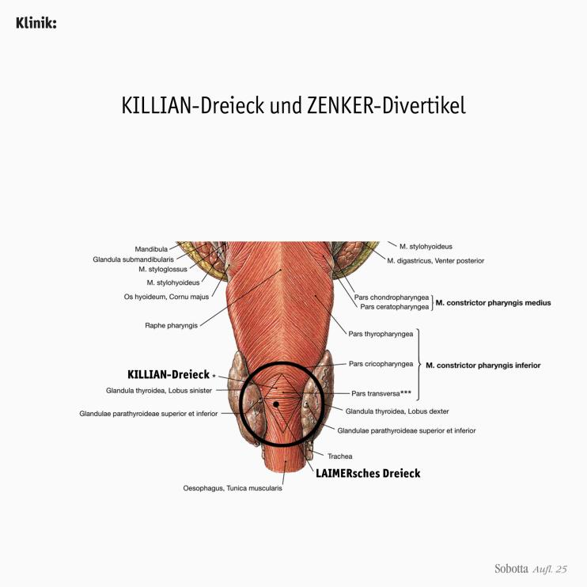
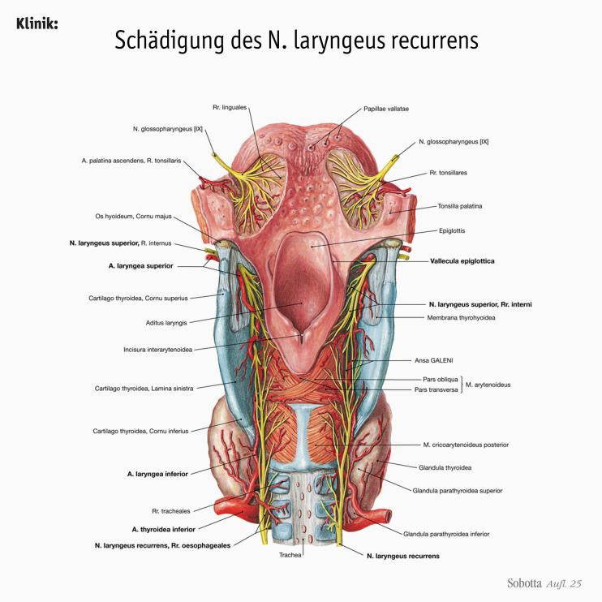
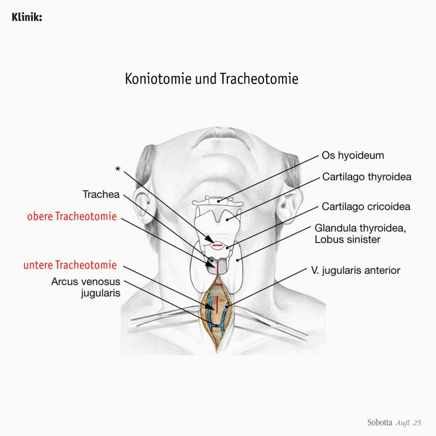
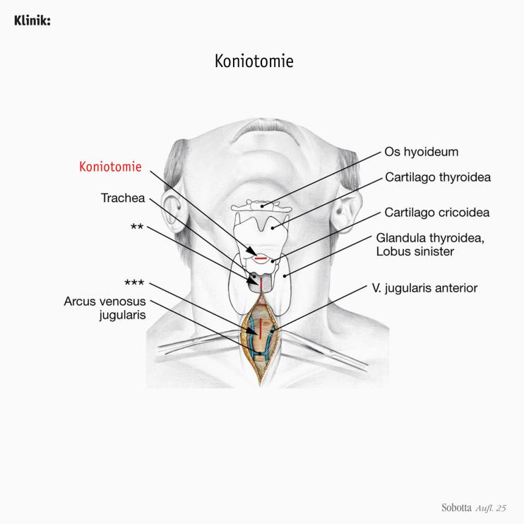
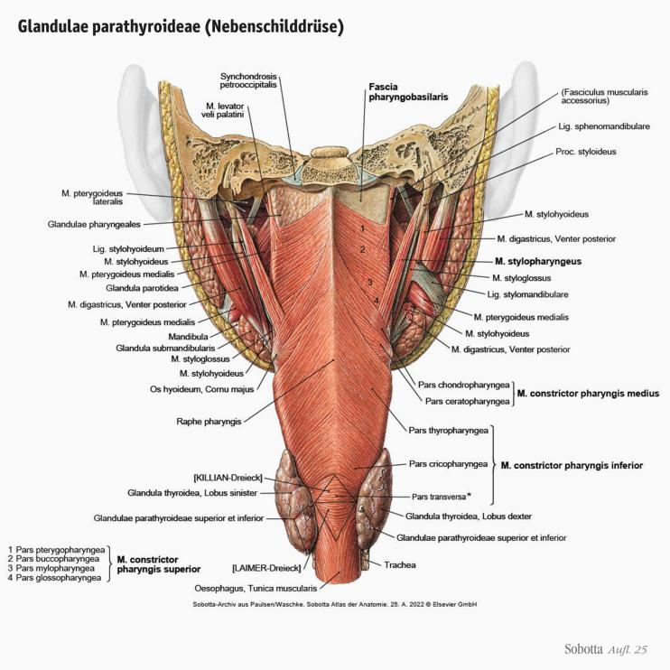
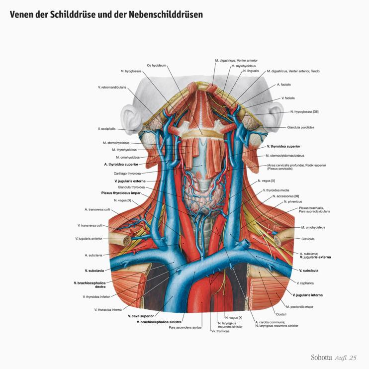
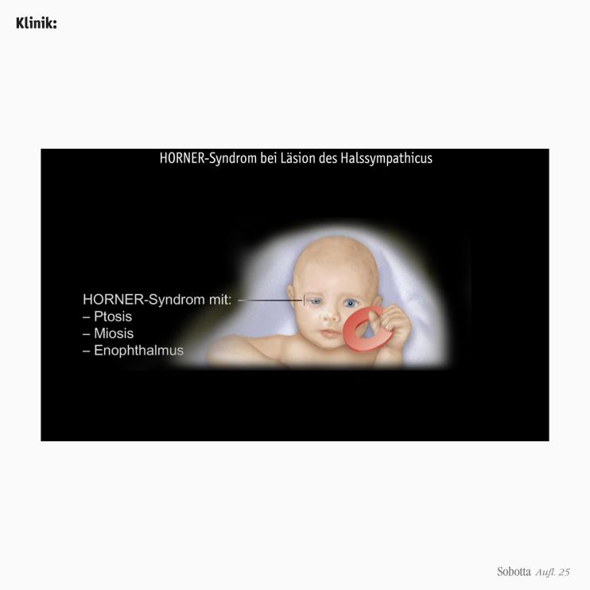

Zur Startseite
Zur Navigation springen
Zum Inhalt springen
Login / Lernen
Registrieren
Shop
Warenkorb
Über quowadis
Über das quowadis-Team
Häufig Gefragt (FAQ)
Impressum
quowadis-blog
AGB und Nutzungsbedingungen
Datenschutz
quowadis Krimi
Die Anatomie der Sache
EuerFeedback
Bodybit
Start
Muskeltabellen
Klinikbezug
IMPP-relevant
Body Bits
Glanzlichter
Lernatlas
Kapitel 1
Kapitel 2
Kapitel 3
Hals
Topographie (12)
Leitungsbahnen (29)
Rachen (12)
Kehlkopf (27)
Luftröhre (4)
Speiseröhre (15)
Schilddrüse und Nebenschilddrüsen (11)
Vegetative Nervenbahnen (14)
Brustsitus
Kapitel 4
Kapitel 5
Leitungsbahnen
Organsteckbriefe
Prüfung
Lernempfehlungen
gefundene Suchergebnisse
schliessen
Kapitel 3 >
Hals
Topographie
Topographie des Halses
Regionen des Halses
Wichtige Halsdreiecke der
Regio cervicalis anterior
Epifasziale Venen des Halses
Muskulatur des Halses
Muskulatur des Halses:
Platysma
Muskulatur des Halses:
M. sternocleidomastoideus
Muskulatur des Halses:
Infrahyale Muskulatur
Muskulatur des Halses:
Mm. scaleni und die prävertebrale Muskulatur
Halsfaszie
Halsfaszie:
Querschnitt

Halsfaszie:
Topographie
Leitungsbahnen
Leitungsbahnen des Halses
Plexus cervicalis:
Verlauf der Hautäste
Plexus cervicalis:
Sensorisches Innervationsgebiet
Kopf und Hals:
Sensorisches Innervationsgebiet
Plexus cervicalis:
Muskeläste (1)
Plexus cervicalis:
Muskeläste (2)
Arterien des Halses
Arterien des Halses:
A. subclavia – Äste
Arterien des Halses:
A. subclavia – A. vertebralis
Arterien des Halses:
A. subclavia – A. thoracica interna
Arterien des Halses:
A. subclavia – Truncus thyrocervicalis
Arterien des Halses:
A. subclavia – Truncus costocervicalis
Arteria carotis externa:
Äste der vorderen Gruppe
Tiefe Halsvenen:
Zuflüsse der V. jugularis interna
Tiefe Halsvenen:
Plexus pterygoideus

Halsvenen:
Topographie
Angulus venosus und Vv. brachiocephalicae

Klinik:
Zentraler Venenkatheter (ZVK) in der V. jugularis interna
Mündung des Ductus thoracicus
Mündung der Lymphstämme im linken und rechten Venenwinkel
Die Virchow-Drüse am Hals
Lymphknoten am Hals
Lymphknoten am Hals:
tiefe Lymphknoten
Die Hirnnerven IX.-XII:
N. glossopharyngeus (IX)
Die Hirnnerven IX.-XII:
N. vagus (X)
Die Hirnnerven IX.-XII:
N. accessorius (XI)
Die Hirnnerven IX.-XII:
N. hypoglossus (XII)
Die Hirnnerven IX.-XII:
Topographie
Vagina carotica:
Inhalt
Rachen
Pharynx
Rachen
Cavitas pharyngis:
Topographie
Lymphatischer Rachenring nach WALDEYER
Pharynxwand:
Pharynxmuskulatur und Fascia pharyngobasilaris
Pharynxmuskulatur:
Schlundschnürer (1)
Pharynxmuskulatur:
Schlundschnürer (2)
Pharynxmuskulatur:
Schlundheber
Ablauf des Schluckaktes

Klinik:
KILLIAN-Dreieck und ZENKER-Divertikel
Innervation des Pharynx
Sensorische Innervation des Pharynx
Blutgefäße des Pharynx
Kehlkopf
Larynx
Kehlkopf
Gliederung und Projektion des Larynx:
3 Stockwerke
Bau der Stimm- und Taschenfalten (1)
Cavitas laryngis
Bau der Stimmfalten
Bau der Stimm- und Taschenfalten (2)
Kehlkopfskelett (1)
Kehlkopfskelett (2)
Kehlkopfskelett und Stimmritze
Gelenke des Kehlkopfs
Kehlkopfmuskeln
Kehlkopfmuskeln
Kehlkopfmuskeln

Klinik:
Schädigung des N. laryngeus recurrens
Intrinsische Kehlkopfmuskulatur
Kehlkopfmuskeln
Funktion des M. vocalis
Intrinsische Kehlkopfmuskulatur
Intrinsische Kehlkopfmuskulatur
Intrinsische Kehlkopfmuskulatur:
Funktion
Klinik:
Indirekte Laryngoskopie (Kehlkopfspiegelung)
Formen der Stimmritze
Extrinsische Kehlkopfmuskeln
Grenze zwischen dem Versorgungsgebiet der Leitungsbahnen:
Die Stimmritze
N. laryngeus superior und inferior (N. vagus)

Klinik:
Tracheotomie

Klinik:
Koniotomie
Luftröhre
Trachea
Luftröhre
Bau der Trachea
Trachea:
Lage im Querschnitt
Leitungsbahnen der Trachea
Speiseröhre
Ösophagus
Speiseröhre
Lage des Ösophagus (1)
Lage des Ösophagus (2)
3 Engen des Ösophagus
Verschlussmechanismen:
Oberer Ösophagussphinkter
Verschlussmechanismen:
Unterer angiomuskulärer Dehnverschluss
Verschlussmechanismen:
Lig. phrenico-oesophageale und HIS-Winkel
Grenze zwischen Ösophagus und Magen
Arterielle Versorgung des Ösophagus
Venöse Drainage des Ösophagus
Venöse Drainage des thorakalen Ösophagus
Klinik:
Portocavale Anastomosen des Ösophagus
Lymphknoten des Ösophagus
Venöse Drainage und Lymphabfluss des Ösophagus im Brustabschnitt
Vegetative Innervation des Ösophagus
Schilddrüse und Nebenschilddrüsen
Glandula thyroidea und Glandulae parathyreoideae
Schilddrüse und Nebenschilddrüsen
Glandula thyroidea (Schilddrüse):
von ventral
Entwicklung von Schilddrüsen und Nebenschilddrüsen
Entwicklung und Klinik:
Ductus thyroglossus und Lobus pyramidalis

Glandulae parathyroideae (Nebenschilddrüse)
Lagebeziehungen der Schilddrüse zum
N. laryngeus recurrens
Arterien der Schilddrüse und der Nebenschilddrüsen

Venen der Schilddrüse und der Nebenschilddrüsen
Topographie
Lymphbahnen der Schilddrüse und der Nebenschilddrüsen
Nervenbahnen der Schilddrüse und der Nebenschilddrüsen
Klinik:
Struma
Vegetative Nervenbahnen
Vegetatives Nervensystem von Hals und Brustsitus
Parasympathicus
Verlauf des N. vagus am Hals und im Brustkorb (1)
Verlauf des N. vagus am Hals und im Brustkorb (2)
Verlauf des N. vagus am Hals und im Brustkorb (3)
Sympathicus:
Versorgungsgebiet
Truncus sympathicus
Truncus sympathicus:
Pars cervicalis
Truncus sympathicus:
Äste zum Plexus cardiacus
Truncus sympathicus:
Ganglion cervicale superius
Truncus sympathicus:
Ganglion cervicale medium
Truncus sympathicus:
Ganglion cervicothoracicum (stellatum)
Truncus sympathicus:
Pars thoracica

Klinik:
HORNER-Syndrom bei Läsion des Halssympathicus